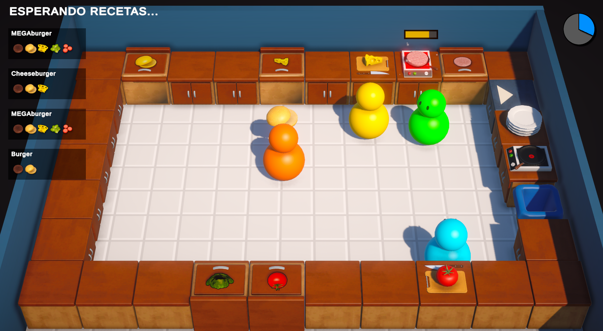
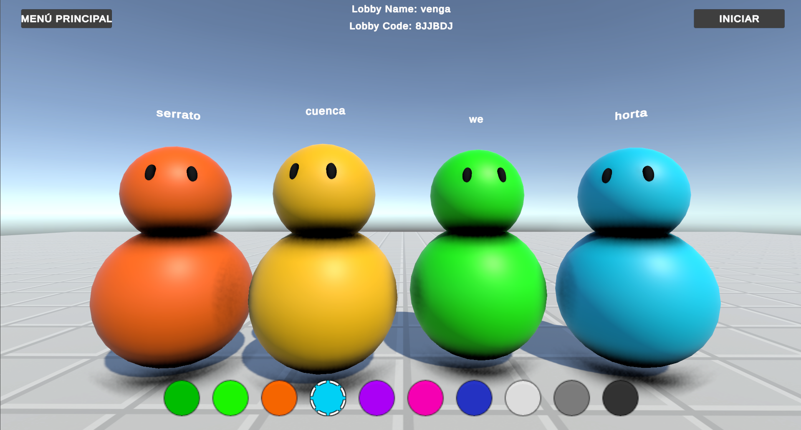
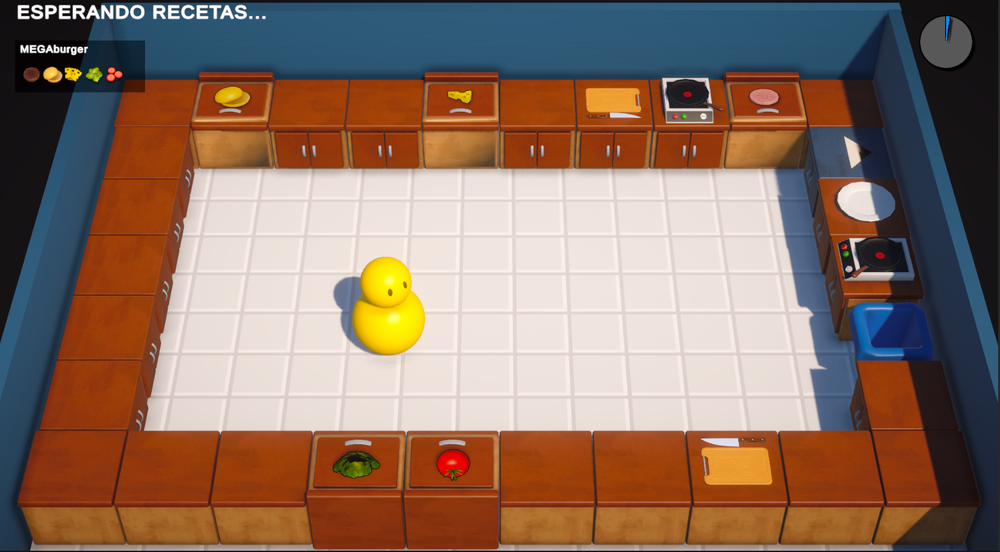

Características del juego
- Experiencia cooperativa multijugador para disfrutar con amigos
- Inspirado en el exitoso juego Overcooked
- Mecánicas simples pero desafiantes
- Diseñado para generar momentos divertidos y caóticos
- Versión beta con un nivel lleno de desafíos

Cocina frenética en acción

Trabajo en equipo es clave

Diseño único del nivel